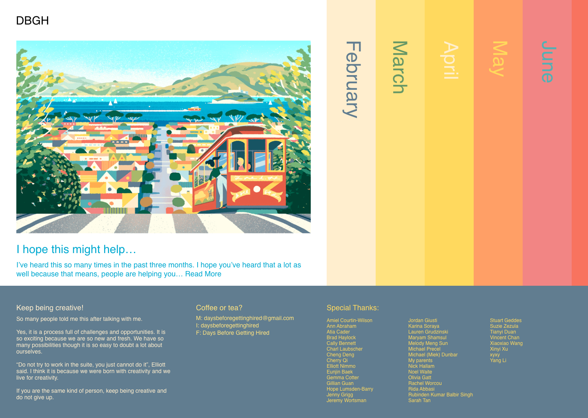
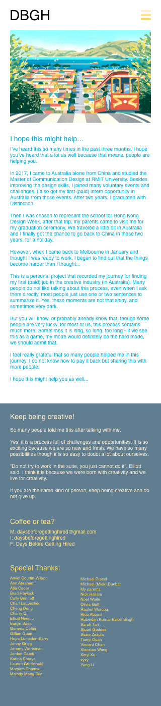
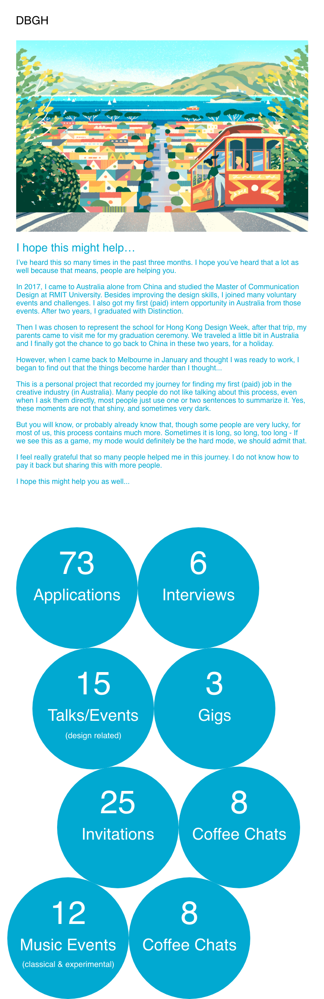

Direction:
Identity & Branding
Production
Digital Design
Copywriting
Coding
2019
In 2019, I started my personal project which tells my real stories about being an international student to explore
my career potentials in the Australian creative industry. This project is designed for inspiring more international
students to stand up and fit in (or at least thinking about if we should fit in), and also as a thank-you gift for
people who helped me along the journey.
Here is the website. You can also have a play below.
It did not look like this for the whole time, it actually started like a mess.
I was busy putting everything there, so I picked a template and changed it into the one I need -
showing stories, numbers, the info of myself and the ones what I want to appreciate.
In June, I began to redesign it.
The initial reason was just because it looks messy and I have some motivation to do the change - have some spare time, have the passion learning coding and have a story called
“A Whole New World” coming.
I started from the sketches on my notebooks and applied that into Sketch in the further steps (Big thanks to Sophie Diao for the example image and all the time inspiration).

And it works on mobile like this.
|  |  |